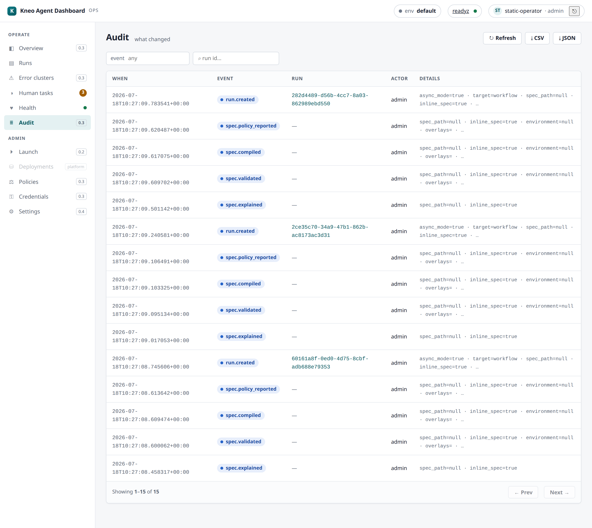
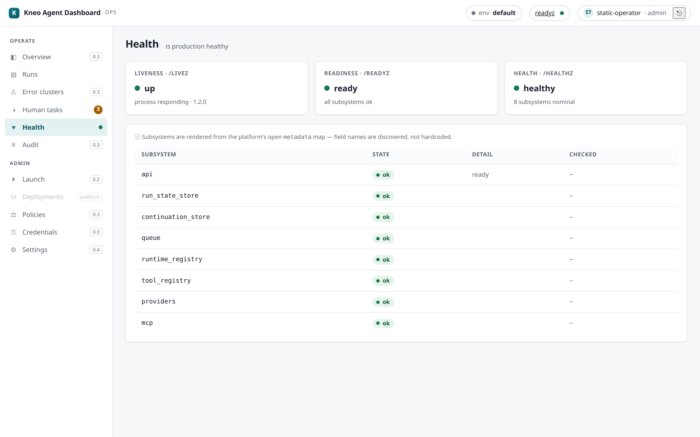

Audit & health¶
"What changed" and "is production healthy" — the compliance + operational-health surfaces.
Audit¶

Operate → Audit is a searchable, newest-first timeline of platform audit events —
run creation/cancellation, human decisions, policy changes, spec actions. It reads the
platform's audit log (kneo-serv is the store; the Dashboard adds none of its own).
Viewing it requires the AUDIT_READ capability (admin in the built-in default map;
reassignable via Settings › Access) — the BFF gates GET /api/audit server-side.
- Filter by
event_type(e.g.run.created,policy.changed,human.decision) and/orrun_id; offset pagination walks deep history to the window cap. - Each row shows when, the event type, actor, the related run (a click drills to the run), and the event's metadata.
Worked example — reconstruct who did what to a run. Filter by the run_id to get that
run's full platform-side timeline (created → policy applied → cancelled → resumed), each row's
actor telling you who. For per-operator Dashboard attribution (kneo-serv sees only the
shared service account) cross-reference the dashboard-local audit log noted below.
Export (CSV / JSON)¶
The Export CSV / Export JSON buttons save the current audit window for a compliance
review or incident hand-off. Same discipline as the Runs export:
it pages the audit endpoint up to a bounded ~1000 rows and flags truncation when the
window is larger (the extract never claims to be the whole history), the CSV is
spreadsheet-formula-safe, and it's composed client-side from the reads your AUDIT_READ
capability already grants — no separate export permission.
Dashboard-local audit log (separate from this page)
This page surfaces the platform audit (anything reaching /v1). The Dashboard
also keeps its own append-only log (0.4.0) at GET /api/audit-log (needs the
AUDIT_READ capability — admin by default) — a best-effort per-operator record (an
append failure is counted, not fatal, so it is not a lossless/compliance-grade log)
of privileged platform mutations, Access/Connections/Pricing writes, and capability
denials. Successful annotation/saved-filter writes are not appended (their
capability denials are; successes carry only a created_by stamp); Preferences
is ungated — no capability and no audit append at all. Exact scope:
the audit contract.
Health¶

Operate → Health derives the platform's operational health from its probes and metadata:
- Probes —
livez(process up),readyz(accepting work),healthz(deep check). The top-bar dot mirrors livereadyzand polls, so it reflects current state. - Subsystems — queue, run-state store, continuation store, OTel exporters, secret
status, etc. — each shown
ok/degradedwith a detail line, derived adaptively from the health metadata the platform reports.
Health is read-only status. Platform runtime configuration (queue limits, retention, confinement, exporters) is kneo-serv ops (env/CLI), not the Dashboard.
Worked example — the top-bar dot went amber. Open Health: readyz is degraded and the
continuation store subsystem shows degraded with a detail line. That's a platform
dependency, not the Dashboard — the Dashboard's own health is a separate concern (its
GET /api/healthz, see troubleshooting). Escalate
to platform ops; runs will queue/stall until it recovers.
Related¶
- Runs & debugging — drill from an audit row into the run.
- Data handling — the dashboard-local audit log's retention + best-effort posture.
- Deployment › probes — the Dashboard's own
livez/readyz/healthz. - Troubleshooting — health triage + symptom index.